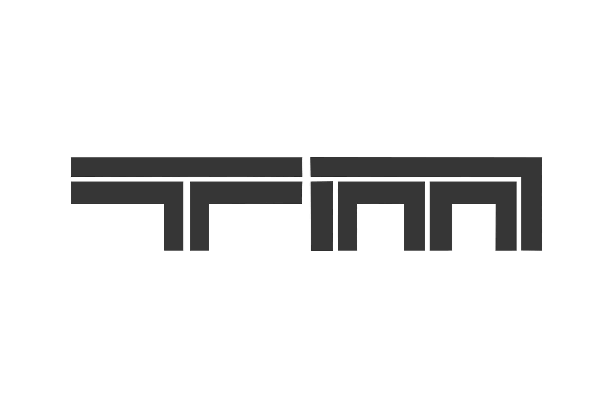

i like playing video games 🎮
i love most racing games, but my specific favorite is Trackmania . i have logged about 300+ hours on TrackMania Nations Forever and about 150+ hours on the new TrackMania. i hope to get into Asseto Corsa soon, but i even procrastinate playing games, so...
apart from my obsession for racing, i like RPGs a lot, especially single-player ones such as Witcher III: Wild Rift, Elder Scrolls V: Skyrim (latest obsession) and RuneScape (Ironman mode). not because i don't have friends, but, well,